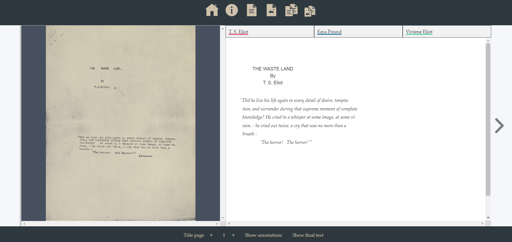
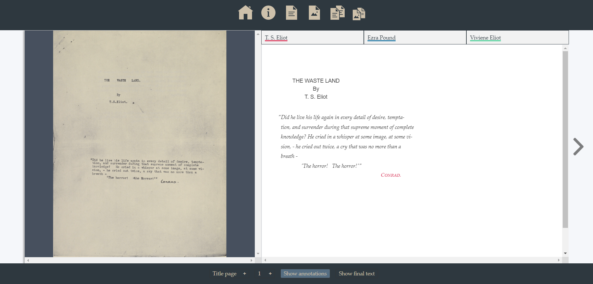
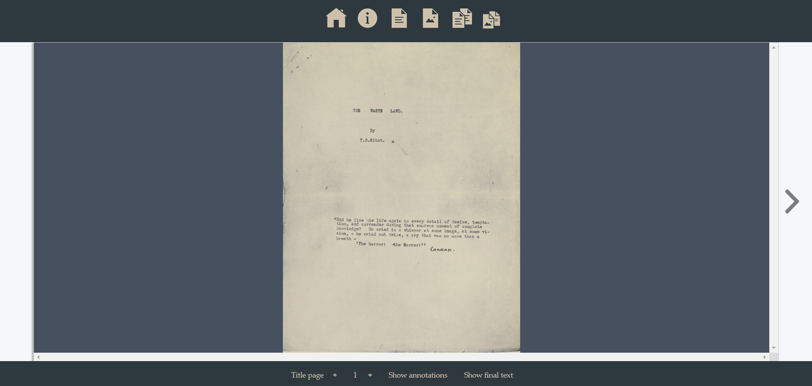

Documentation
The manuscript: "a hoard of fragments"
Why do we need a scholarly digital edition of the "The Waste Land" manuscript and how are we supposed to benefit from it?
The answer to those questions can be easily found in the history of the poem as well as in the manuscript's destiny. T. S. Eliot started working on his drafts of "The Waste Land" in 1921. In January 1922, he decided to submit the manuscript to his friend and colleague Ezra Pound, who strongly supported Eliot's effort with his maieutic skill (Valerie Eliot, 1993). At the end of the same year, once the poem had already been published, the manuscript was donated to John Quinn as a sign of gratitude for the financial assistance he had provided to the poet. After Quinn's death, all the traces of the manuscript were lost, and it was still kept private after its acquisition by the New York Public Library. It was only in October 1968 that the Library revealed that Eliot's original drafts had been unearthed (Grover Smith, 1972).
The manuscript-typescript is currently located in the Berg Collection held by the New York Public Library. The document comprises a mix of 54 typed and handwritten pages - 47 of which are single leaves - on a variety of different papers. Moreover, the whole set of leaves appears divided into two sections: the main text, and the miscellaneous poems which were considered for it.
This brief description seems to somehow justify what Eliot said about the genesis of his masterpiece: according to the author, "The Waste Land" began as a hoard of fragments. Reproducing this intricate work and its crucial stages are the major aims of the present SDE.
Towards a scholarly digital edition
How to define the present SDE?
As abundantly claimed by many scholars and masters in the field of Digital Humanities, a digitised edition is not a digital edition (Patrick Sahle, 2016). This means that a scholarly digital edition is supposed to be guided by a digital paradigm. At this point, some might ask what we mean by digital. It is worth clarifying that we should not naively identify the web with the digital, as the digital is a much broader concept. As suggested by Marcello Vitali-Rosati, ‘the digital’ is not only about tools but in fact refers to a whole cultural environment (Marcello Vitali-Rosati, 2018): the cultural environment we live in. The WWWasteLand Digital Edition adhere to these tenets, so it can be easily stated that it cannot be conceived as the mere transposition of a poem's drafts from an analog support to a digital environment. Then, how can we define this project?
Transcribing a text into a digital format is an analytical activity that leads to the selection of some of the features connected with the object or domain which are considered relevant by the researcher (Elena Pierazzo, 2019). With respect to the present edition, the "object" coincides with T. S. Eliot's original manuscript of "The Waste Land", bearing extensive editing changes by Ezra Pound and some other annotations by Vivienne Eliot, while the "features which are relevant to the researcher" will be introduced in the following paragraphs. However, the selection process is the first fundamental step towards the production of a scholarly edition, given its inherent necessity of underlying a criterion (John Unsworth, 2000).
Edition criteria
Before starting to create a scholarly digital edition, one must understand what this expression actually means and, more specifically, what kind of edition better suits to the source documents. Given the peculiar history and the overall shape of the manuscript, the primary focus of this edition falls on its genesis (the original text) as well as on its diachrony (corrections and annotations). In other words, the main purpose is to provide the users with an easy-to-use interactive transcription, able to capture and freeze the first crucial phases of the creative process. Though the textual level is somehow put into the foreground, this project also intends to furnish scholars and enthusiasts with a springboard for further semantic analysis (and much more).
According to Michael Sperberg-McQueen, "there is an infinite set of facts related to the work being edited", so that "any edition records a selection from the observable and the recoverable portions of this infinite set of facts" (Michael Sperberg-McQueen). Thus, we must be aware that any transcription entails a loss of information, and the final result always derives from an interpretative act (Elena Pierazzo, 2011). Furthermore, the selection process is somehow limited by the capabilities of the publishing technology, whose boundaries might be partially overcome through the introduction of a facsimile. This solution has been adopted in multiple projects (e.g., the Austen Digital Edition) and is now brushed up again so that users are able to verify the exact documentary layout themselves. However, though a facsimile is an instrument that clearly aims to enhance the user's experience, it also adds a new modality of accessing the edition, i.e., a new layer of complexity. Somebody might perceive this aspect as a redundant choice, and so as a drawback, but it actually turns out to be perfectly compliant with the definition of documentary digital edition proposed by Elena Pierazzo: the recording of as many features of the original document as are considered meaningful by the editors, displayed in all the ways the editors consider useful for the readers, including all the tools necessary to achieve such a purpose.
On the basis of these premises and definitions, the present edition has been organized trying to reproduce the creative process of "The Waste Land" original drafts. Accordingly, the critical text fully coincides with the original one with regard to both the spelling and the page layout. All the abbreviations, diacritics, whitespaces, and punctuation have been kept unaltered, as well as the position of notes, revisions, and graphic elements. The only exception regards overwritten corrections: in order to avoid any case of unclear spelling, the text has been rendered as an inline revision. Graphics have been reproduced as similarly as possible to the original ones: the same criterion has been followed for text decorations, font sizes, and font styles.
As stated above, a major issue regards the several levels of interventions in the text. In order to better tackle this problem, three important solutions have been adopted:
- Multilayered structure: the edition offers four layers of analysis coinciding with four different representations of the manuscript:
1) A default critic text coinciding with the original text of the typescript.
2) A faithful reproduction of the whole document, including hand-written annotations, corrections, and graphic signs.
3) An updated version of the default critic text corrected according to the hand-written interventions.
4) A facsimile, that is, a picture of the original manuscript. - Colours: each intervention is marked using a different colour depending on its attribution to one of the three hands (T. S. Eliot, Vivienne Eliot, Ezra Pound).
- Intervention classification (further details available in the next section TEI/XML econding): each revision has been classified on the basis of its philological meaning. In particular, the manuscript mainly shows deletions, corrections, and notes. Deletions are usually easily identifiable, while some issues might arise while trying to distinguish corrections and notes out the body of the text. The results of this disambiguation task can be better analysed by looking through the TEI/XML encoded text (available here).
Web technologies
The last crucial aspect of this introduction concerns the technologies involved in the realization of the present edition. The clear ambition behind this project is that of producing a valuable resource whose content could be easily accessed by as many scholars and enthusiasts as possible. The World Wide Web effectively meets with this need, though the present text is not immediately available in the HTML format. Indeed, a primary role is played by the XML-TEI source file, whose content coincides with a transcription of the whole document - including metadata and implicit features - encoded according to the TEI guidelines. Resorting to this paradigmatic markup guarantees two main advantages:
- A unique source file, which directly contains a diplomatic edition, enables multiple outputs.
- The markup enriches the text with some hidden information - for instance, through attributes - that would be lost otherwise.
However, the TEI-encoded text must be then converted into an HTML file. This task could be fulfilled in many different ways and by adopting many different tools. With regard to the present edition, the conversion relies on CETEIcean, a JavaScript Library that allows the editor to load, customize and visualize the TEI document.
As explained by the creator of the CETEIcean library, there are several reasons why to choose it (Raffaele Viglianti, 2019):
- Using web technologies for web publication, since XSLT/XQuery are not sufficient, by themselves.
- Semantics: shared text model between TEI and its publication
- Preservation: server-side software can be omitted
The first point is of major importance since editors are free to customize their products according to their specific needs (CSS and JS). This aspect becomes even more relevant while dealing with complex sources and multi-layered editions, like in this case.
General structure
The content of the manuscript-typescipt has been encoded according the P5 guidelines provided by the Text Encoding Initiative. In particular, the main source of the present edition's encoding coincides with the eleventh chapter of the guidelines, which is devoted to the Representation of Primary Sources.
The TEI markup follows the general rules and the syntax of the XML markup language. The overall structure of a unitary text is:
<TEI xmlns="http://www.tei-c.org/ns/1.0">
<teiHeader>
<!-- ... -->
</teiHeader>
<text>
<front>
<!-- front matter of copy text, if any, goes here -->
</front>
<body>
<!-- body of copy text goes here -->
</body>
</text>
</TEI>
This is the skeleton of our diplomatic edition, whose content can be clearly divided into two major sections:
- teiHeader: introduces the manuscript, the edition, and their metadata.
- text: contains the actual text the diplomatic edition.
<teiHeader>
With regard to the present edition, the teiHeader contains both a full bibliographic description of an electronic file (<fileDesc>) and a presentation of all the non-bibliographic information (<profileDesc>)
- <fileDesc>: includes some information about:
- The title (
<titleStmt>): presents the actual title of the edition (<title>) and the name of the author (<author>) - The edition (
<editionStmt>): includes information about the first edition and a statement of responsibility for the intellectual content of the edition (<respStmt>) - The publication (
<publicationStmt>): introduces the publisher (<title>) and possible restrictions on its use or distribution (<availability>) - The source (
<sourceDesc>): provides a description of the source document which is nested inside the more specific<msDesc>element:- <msIdentifier>: presents the city (
<settlement>) and the repository (<repository>) where the manuscript is located, along with its catalogue number (<idno>) - <msContents>: describes the intellectual content of the manuscript. Since we are dealing with a single poem, the content coincides with a single
<msItem>, providing information about the title (<title>), the author's name (<author>) and the date of creation (<date>) of the original work. - <physDesc>: encloses a physical description of the manuscript. Given the relevance of the revision process, a special focus is devoted to the analysis of the hands (
<handDesc>). The element<handDesc>contains a different<handNote>element for each of the hands involved. The<handNote>tag presents some important attributes:@xml:id, later recalled for identifying the ownership of a revision;@scribe, providing the name of the contributor;@scope, specifying how widely a certain hand is used in the manuscript.
- <msIdentifier>: presents the city (
- The title (
<profileDesc>: contains some information about the languages used in the manuscript inside the<langUsage>element. Each language is introduced by a<language>element, whose opening tag includes the attribute<ident>, supplying a language code constructed as defined in BCP 47
<text>
At the same level as the <teiHeader>, readers can find the <text> element, whose inner tags depict the actual content of the source manuscript-typescript. The current SDE aims to provide the users with an easy-to-use product, thus, the original pagination of Eliot’s drafts has been kept unchanged. Consequently, the content of the <text> element has been split into a <front> element and the <body> part. From now on, each <div> element will mark the beginning and the end of a single page, with the exception of a <div> directly nested inside another <div> element.
Let us now focus on the <front> element of the present edition, whose specific structure looks like this:
<front>
<front>
<titlePage>
<pb/>
<div>
<facsimile>
<graphic/>
</facsimile>
<div>
<head>
</head>
<quote>
</quote>
</div>
</div>
</titlePage>
</front>
The front of the typescript consists of a single title page, marked by the corresponding tag (<titlePage>). Each page beginning is highlighted by the <pb/> tag, while the actual content of a page is placed inside the <div>. This last tag always contains a digital reproduction (<facsimile>) of the original source: the URL of the picture is expressed by the <@url> attribute of the (<graphic/>) element. The text of the title page is then articulated into the main heading (THE WASTE LAND / By / T. S. Eliot) and an introductory quotation. The former is introduced by the <head> element, the latter is marked as a <quote>.
<body>
The <body> element encloses the text of the poem: its stanzas and lines. The following schema shows the general structure of this part.
<body>
<!--page n-->
<pb/>
<div>
<facsimile>
<graphic/>
</facsimile>
<lg type=“poemPage”>
</lg>
</div>
<!--page n + 1-->
</body>
This structure is reused for each page of the poem (with the obvious exception of the <body> tag). Specifically, the first four elements (<pb/>, <div>, <facsimile>, <graphic/>) are devoted to pagination and coincide with the opening tags of the <titlePage>. However, the main element of this section is <lg type=“poemPage”>, i.e., the element containing the headings, the stanzas/lines, and the corrections/notes produced by T.S. Eliot, Ezra Pound, and Vivienne Eliot. At this level, the <lg> element always presents two attributes: @n (page number) and @type (in this case, the attribute always assumes the value poemPage). The <lg type=“poemPage”> element usually includes the following direct children:
<lg type="stanza">: at this level, the line group elements identify the stanzas of the poem. Therefore, the opening tag must include the attributes@n(stanza number) and@type(in this case, the attribute always assumes the valuestanza).<head>: the poem is made up of several sections, each of them having its own title. Moreover, some pages of the manuscript-typescript present an opening numeration, which is included inside the element<head>, too.<note>: the most peculiar feature of the Waste Land original drafts is the remarkable number of annotations later written by the author, by his colleague Ezra Pound, and by his wife Vivienne Eliot. While introducing notes, it is crucial to pinpoint the major difference between<note>elements and some other types of intervention in the text, like<add>instances: we generally identify as<add>those additional portions of text introduced within the body of the text (e.g.: overwritten corrections, inline revisions, external additions of text whose exact location in the poem is made explicit by graphic or written signs), whereas<note>elements refer to annotations located elsewhere in the document, outside the original body of the text. Morover,<note>elements never modify the base text.
The last basic element of each poem encoding is the line: <l>. Lines are numerated five by five, by means of the attribute @n associated with a value equal to 1 or a multiple of 5. In the vast majority of cases, <l> elements are direct children of a stanza <lg type="stanza">
Some other elements can be nested both inside the <lg type=“poemPage”> and the <lg type=“stanza”> elements, or even inside a line (<l>) or an annotation (<note>), depending on the portion of text they affect:
<add>: the addition of a portion of text. This element is characterized by the following attributes:@hand(the author of the addition),@place(the place inside the text, e.g.: margin-left, overwritten, etc.).<anchor>: the anchor point element marks a specific point within a text. For instance, it might be required to identify the end of a<delSpan>.<del>: the deletion of a portion of text. This element is characterized by the attribute@hand, expressing the author of the deletion.<delSpan>: it marks the beginning of a longer portion of text deleted, i.e., all the deletions which are longer than a single verse or whose boundaries are not inside the same line. This element is characterized by the following attributes:@hand(the author of the deletion),@spanTo(a reference to the end point of the deletion span).<graphic>: indicates the presence of a graphic or illustration. It must include the@urlattribute redirecting to an image file.<hi>: this element marks a portion of text that is graphically distinct from the surrounding text. It takes the following attributes:@hand(the author of the marker),@rend(the shape/aspect of the marker).<metamark>: any kind of signal expressing how the document should be read. For instance, it can be used for a stanza/line/word whose new location inside the text is pointed by an arrow. This element is characterized by the following attributes:@hand(the author of the signal),@place(the place inside the text),@rend(the shape/aspect of the signal), and@target(the target of the signal).<subst>: this element marks a group of one or more deletions and one or additions. Thus, it must contain at least one<del>and an<add>.
One poem, four approaches
In the first section of the present documentation, it emerged the relevance of approaching the same work from different perspectives. Accordingly, users have been provided with four different modalities of accessing the text:
Default viewer
The default perspective of the present edition consists of a facsimile of the source document and a transcription of the original text of the typescript:
The edition can be surfed by turning pages (left/right button, < > keys) or looking for the exact page/section through the menus below. Users might also be interested in visualizing the corrections and the notes produced on the manuscript-typescript. To visualize the interventions, users can either click on the button Show annotations or press the A key. The new text will look like this:
Other options
There are three more ways of accessing the content of the edition:
Facsimile: it can be accessed by clicking on the specific icon (top menu) or pressing the F key. The result will look like this:
Comparing two versions: it can be accessed by clicking on the specific icon (top menu) or pressing the C key. The right side of the page still coincides with the default text, whose annotations can be visualized as usual (above)
Text only: by clicking on the specific icon (top menu) or pressing the T key. The new text coincides with a new version of the text, revised according to those interventions that had an actual effect on the evolution of the poem. Thus, this text represents the most updated version of the manuscript-typescript.